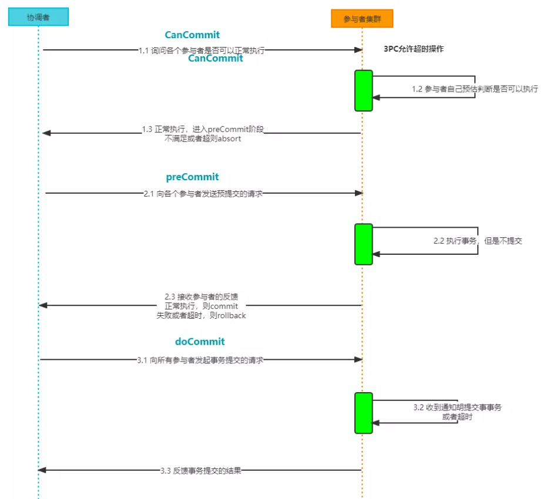
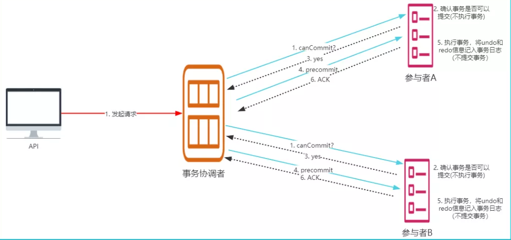
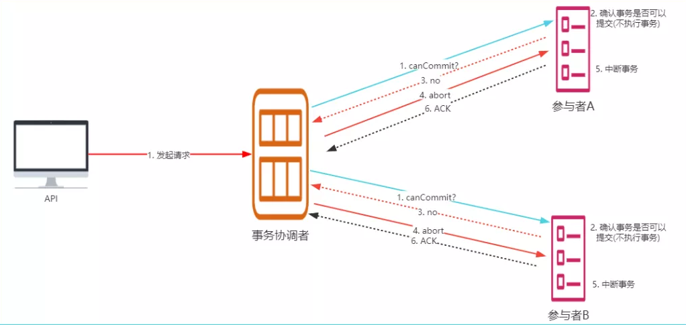
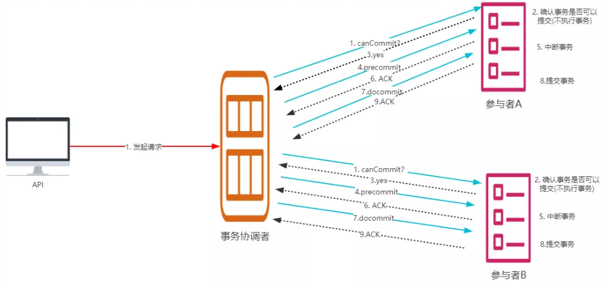
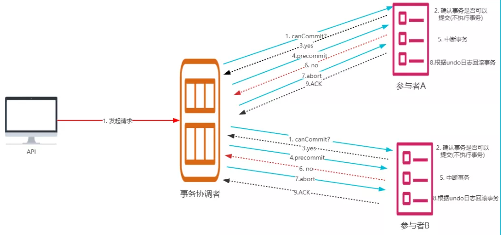

什么是3PC
3PC，三阶段提交协议，是二阶段提交协议的改进版本，三阶段提交有两个改动点：
（1）在协调者和参与者中都引入超时机制
（2）在第一阶段和第二阶段中插入一个准备阶段，保证了在最后提交阶段之前各参与节点的状态是一致的。
所以3PC会分为3个阶段，CanCommit 准备阶段、PreCommit 预提交阶段、DoCommit 提交阶段，处理流程如下：

3PC阶段详情
阶段一：CanCommit 准备阶段
协调者向参与者发送 canCommit 请求，参与者如果可以提交就返回Yes响应，否则返回No响应，具体流程如下：
- 事务询问：协调者向所有参与者发出包含事务内容的 canCommit 请求，询问是否可以提交事务，并等待所有参与者答复。
- 响应反馈：参与者收到 canCommit 请求后，如果认为可以执行事务操作，则反馈 yes 并进入预备状态，否则反馈 no。
阶段二：PreCommit 阶段
协调者根据参与者的反应情况来决定是否可以进行事务的 PreCommit 操作。根据响应情况，有以下两种可能：
执行事务：
假如所有参与者均反馈 yes，协调者预执行事务，具体如下：
- 发送预提交请求：协调者向参与者发送 PreCommit 请求，并进入准备阶段
- 事务预提交 ：参与者接收到 PreCommit 请求后，会执行本地事务操作，并将 undo 和 redo 信息记录到事务日志中（但不提交事务）
- 响应反馈 ：如果参与者成功的执行了事务操作，则返回ACK响应，同时开始等待最终指令。

中断事务：
任何一个参与者反馈 no，或者等待超时后协调者尚无法收到所有参与者的反馈，即中断事务
- 发送中断请求：如果协调者处于工作状态，向所有参与者发出 abort 请求
中断事务 ：参与者收到来自协调者的 abort 请求之后（或超时之后，仍未收到协调者的请求），执行事务的中断。

阶段三：doCommit阶段
该阶段进行真正的事务提交，也可以分为以下两种情况：
提交事务：
- 发送提交请求：协调接收到所有参与者发送的ACK响应，那么他将从预提交状态进入到提交状态，并向所有参与者发送 doCommit 请求
- 本地事务提交：参与者接收到doCommit请求之后，执行正式的事务提交，并在完成事务提交之后释放所有事务资源
- 响应反馈：事务提交完之后，向协调者发送ack响应。
完成事务：协调者接收到所有参与者的ack响应之后，完成事务。

中断事务:
任何一个参与者反馈 no，或者等待超时后协调者尚无法收到所有参与者的反馈，即中断事务
- 发送中断请求：如果协调者处于工作状态，向所有参与者发出 abort 请求
- 事务回滚：参与者接收到abort请求之后，利用其在阶段二记录的undo信息来执行事务的回滚操作，并在完成回滚之后释放所有的事务资源。
- 反馈结果：参与者完成事务回滚之后，向协调者反馈ACK消息
中断事务：协调者接收到参与者反馈的ACK消息之后，执行事务的中断。

进入doCommit阶段后，无论协调者出现问题，或者协调者与参与者之间的网络出现问题，都会导致参与者无法接收到协调者发出的 doCommit 请求或 abort 请求。此时，参与者都会在等待超时之后，继续执行事务提交。这其实基于概率来决定的，当进入第三阶段时，说明第一阶段收到所有参与者的CanCommit响应都是Yes，意味着大家都同意修改了，并且第二阶段所有的参与者对协调者的PreCommit请求也都是同意的。所以，一句话概括就是，当进入第三阶段时，由于网络超时等原因，虽然参与者没有收到commit或者abort响应，但是他有理由相信：成功提交的几率很大。
优缺点
3PC 作为2PC的改动出现，引入第一阶段，就是为了尽可能的减少锁定资源的时间，降低了阻塞范围，并且在等待超时后，协调者或参与者会中断事务，避免了协调者单点问题，阶段三中协调者出现问题时，参与者会继续提交事务。
数据不一致问题依然存在，当在参与者收到 preCommit 请求后等待 doCommit 指令时，此时如果协调者请求中断事务，而协调者因为网络问题无法与参与者正常通信，会导致参与者继续提交事务，造成数据不一致。
3PC是假设网络环境差的情况下，但通常情况 2PC即可。
引用：https://blog.csdn.net/a745233700/article/details/122402303

...
...
This is copyright.